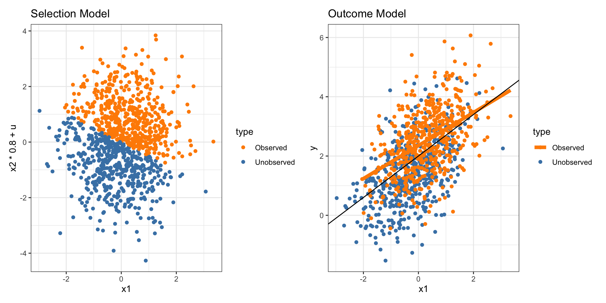

MAR or MNAR?
2025-10-14
Practical clues for MNAR
- Suspicious dependence on the missing variable itself
Example: Higher-income respondents tend not to report income.
Raises suspicion:
The variable’s missing rate increases with values of related proxies (e.g., luxury spending, occupation).
Conditioning on observed covariates doesn’t resolve all missingness patterns
Practical clues for MNAR (2)
- Strong deviations from expected distributions
Compare distributions of observed vs imputed (under MAR) values.
If imputed values under MAR seem implausible (e.g., unrealistically low variance), MNAR might be at play.
- External knowledge or theory
You often detect MNAR based on domain expertise — e.g., people tend to underreport sensitive information.
Statistical Approaches to determine MNAR
- Patterns in the missingness indicator
Create Indicator variable \(R_i\)
Model R as a function of other variables using logistic regression:
\[ \text{logit } P(R = 1 \mid X) = X\beta \] ‘unexplained’ pattern in residual may signal MNAR.
Statistical strategies to probe MNAR
- Sensitivity analysis
Fit models assuming MAR, then perturb the imputation model (e.g., add a shift to imputed values) to see if results change substantially.
Large sensitivity signals MNAR
- Selection models (Heckman-type)
Jointly model the outcome and the missingness indicator.
Heckman-type Selection Models
Situation:
\[ Y = X\beta + \varepsilon \] Assume that ther might be some individuals that choose not to answer \(Y\), i.e. the probability for a missing value in \(Y\) might depend on its value.
This introduce a selection bias into the observed sample.
Heckman selection model corrects for this bias by modelling (1) the selection process and (2) the outcome simultaneously.
Selection Model
Let \(R\) be the shadow variable of \(Y\), i.e. \(R_i = 1\) if \(Y\) is observed and \(R_i = 0\) if \(Y\) is missing.
Let us assume that \(R^*\) is a latent process with \(R^* > 0 \Rightarrow R=1\) and \(R^* < 0 \Rightarrow R=0\).
Assume that we can model \(R^*\) as
\[ R^* = Z\gamma + u \] For some covariate \(Z\) and error \(u\). We assume \(u \sim N(0,1)\)
Outcome Model
Consider the original model in question
\[ Y = X\beta + \varepsilon \] \(Y\) is only observed when \(R=1\), i.e. \(R^* > 0\)
Assume \(\varepsilon\) and \(u\) are jointly normal:
\[\begin{pmatrix} \varepsilon \\u\end{pmatrix}\sim N\left( \begin{pmatrix} 0 \\0 \end{pmatrix}, \begin{pmatrix} \sigma^{2} & \rho\sigma \\ \rho\sigma & 1 \end{pmatrix} \right)\]
Relationship of Selection & Outcome Model
Then conditional expectation of \(Y\) is:
\[ \begin{eqnarray*} E[y_i \mid y_i \text{ observed}] &=& E[y_i \mid r^*_i > 0]\\ &=&E[y_i \mid u_i > - z_i\gamma]\\ &=& x_i\beta + E[\varepsilon_i \mid u_i > - z_i\gamma]\\ &=& x_i\beta + \rho\sigma \underbrace{\frac{\phi(w_i\gamma)}{\Phi(w_i\gamma)}}_{\text{inverse Mills ratio}} \end{eqnarray*} \] i.e. only if \(\rho \neg 0\), the expectation of \(Y\) is affected by missing values.
Then use ML Estimates for jointly estimating \(\beta, \rho, \sigma, \gamma\).
Simulation example
Selection and Outcome
Fit Parameters \(\varepsilon, u, \rho, \sigma\)
--------------------------------------------
Tobit 2 model (sample selection model)
Maximum Likelihood estimation
Newton-Raphson maximisation, 3 iterations
Return code 1: gradient close to zero (gradtol)
Log-Likelihood: -1199.5
1000 observations (486 censored and 514 observed)
7 free parameters (df = 993)
Probit selection equation:
Estimate Std. Error t value Pr(>|t|)
(Intercept) -0.002738 0.045142 -0.061 0.952
x1 0.535494 0.050703 10.561 <2e-16 ***
x2 0.794989 0.054436 14.604 <2e-16 ***
Outcome equation:
Estimate Std. Error t value Pr(>|t|)
(Intercept) 1.95495 0.07906 24.73 <2e-16 ***
x1 0.67387 0.05186 12.99 <2e-16 ***
Error terms:
Estimate Std. Error t value Pr(>|t|)
sigma 1.03469 0.04277 24.191 < 2e-16 ***
rho 0.62813 0.07874 7.977 4.11e-15 ***
---
Signif. codes: 0 '***' 0.001 '**' 0.01 '*' 0.05 '.' 0.1 ' ' 1
--------------------------------------------NHANES Data Example
Consider the NHANES data from the R package NHANES. The variable AlcoholDay is the number of average drinks US adults (age 18 and older) report drinking
Underage drinking is associated with increased non-response rates. What can we say about the extent of underage drinking?

Extent of Underage Drinking
Model based on observed data only:
Call:
lm(formula = AlcoholDay ~ Underage, data = NHANES)
Residuals:
Min 1Q Median 3Q Max
-3.989 -1.786 -0.786 0.214 79.214
Coefficients:
Estimate Std. Error t value Pr(>|t|)
(Intercept) 2.78635 0.04617 60.35 <2e-16 ***
UnderageTRUE 2.20313 0.19170 11.49 <2e-16 ***
---
Signif. codes: 0 '***' 0.001 '**' 0.01 '*' 0.05 '.' 0.1 ' ' 1
Residual standard error: 3.141 on 4912 degrees of freedom
(2567 observations deleted due to missingness)
Multiple R-squared: 0.02618, Adjusted R-squared: 0.02599
F-statistic: 132.1 on 1 and 4912 DF, p-value: < 2.2e-16Extent of Underage Drinking
Heckman Selection Model: what factors impact non-report of alcohol days?
Impact of Age on Non-reports
Low age: high non-reports; higher non-reports with increase in Age

Model as linear term with interaction of Underage
--------------------------------------------
Tobit 2 model (sample selection model)
Maximum Likelihood estimation
Newton-Raphson maximisation, 6 iterations
Return code 8: successive function values within relative tolerance limit (reltol)
Log-Likelihood: -15918.56
6529 observations (1733 censored and 4796 observed)
11 free parameters (df = 6518)
Probit selection equation:
Estimate Std. Error t value Pr(>|t|)
(Intercept) 1.309990 0.149503 8.762 < 2e-16 ***
poly(Age, 2)1 -15.540511 1.490716 -10.425 < 2e-16 ***
poly(Age, 2)2 -17.389755 1.451158 -11.983 < 2e-16 ***
Pulse -0.002547 0.001452 -1.754 0.0794 .
BMI -0.019560 0.002516 -7.774 8.79e-15 ***
SleepHrsNight 0.014796 0.012745 1.161 0.2457
DaysMentHlthBad -0.003305 0.002160 -1.530 0.1261
Outcome equation:
Estimate Std. Error t value Pr(>|t|)
(Intercept) 2.93289 0.06588 44.52 <2e-16 ***
UnderageTRUE 2.23048 0.19575 11.39 <2e-16 ***
Error terms:
Estimate Std. Error t value Pr(>|t|)
sigma 3.15382 0.03283 96.078 < 2e-16 ***
rho -0.11236 0.03432 -3.274 0.00107 **
---
Signif. codes: 0 '***' 0.001 '**' 0.01 '*' 0.05 '.' 0.1 ' ' 1
--------------------------------------------